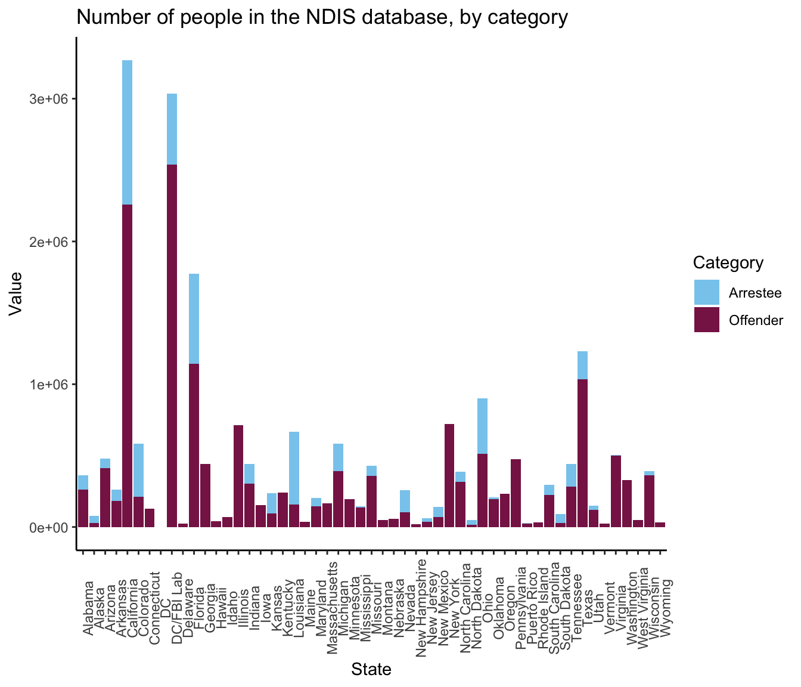
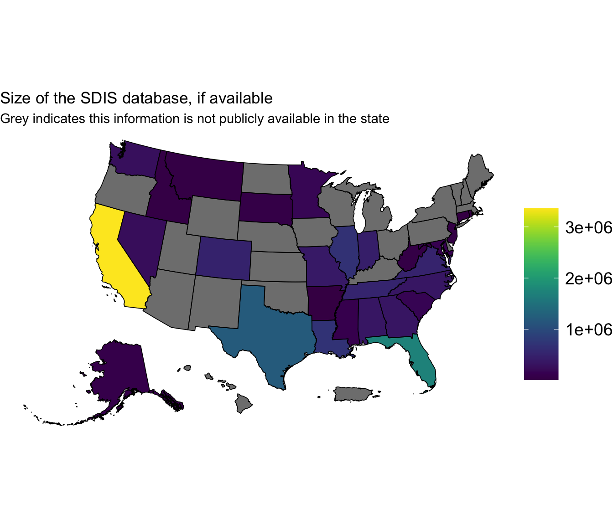

Last updated: 2025-07-02
Checks: 7 0
Knit directory: PODFRIDGE/
This reproducible R Markdown analysis was created with workflowr (version 1.7.1). The Checks tab describes the reproducibility checks that were applied when the results were created. The Past versions tab lists the development history.
Great! Since the R Markdown file has been committed to the Git repository, you know the exact version of the code that produced these results.
Great job! The global environment was empty. Objects defined in the global environment can affect the analysis in your R Markdown file in unknown ways. For reproduciblity it’s best to always run the code in an empty environment.
The command set.seed(20230302) was run prior to running
the code in the R Markdown file. Setting a seed ensures that any results
that rely on randomness, e.g. subsampling or permutations, are
reproducible.
Great job! Recording the operating system, R version, and package versions is critical for reproducibility.
Nice! There were no cached chunks for this analysis, so you can be confident that you successfully produced the results during this run.
Great job! Using relative paths to the files within your workflowr project makes it easier to run your code on other machines.
Great! You are using Git for version control. Tracking code development and connecting the code version to the results is critical for reproducibility.
The results in this page were generated with repository version 350fb68. See the Past versions tab to see a history of the changes made to the R Markdown and HTML files.
Note that you need to be careful to ensure that all relevant files for
the analysis have been committed to Git prior to generating the results
(you can use wflow_publish or
wflow_git_commit). workflowr only checks the R Markdown
file, but you know if there are other scripts or data files that it
depends on. Below is the status of the Git repository when the results
were generated:
Ignored files:
Ignored: .DS_Store
Ignored: .Rhistory
Ignored: .Rproj.user/
Ignored: analysis/.DS_Store
Ignored: code/.DS_Store
Ignored: data/.DS_Store
Ignored: output/.DS_Store
Untracked files:
Untracked: data/Murphy_combined_data.csv
Unstaged changes:
Modified: analysis/codis_regression.Rmd
Modified: analysis/racial_proportion.Rmd
Modified: analysis/regression.Rmd
Modified: data/final_CODIS_data.csv
Note that any generated files, e.g. HTML, png, CSS, etc., are not included in this status report because it is ok for generated content to have uncommitted changes.
These are the previous versions of the repository in which changes were
made to the R Markdown (analysis/forensic_databases.Rmd)
and HTML (docs/forensic_databases.html) files. If you’ve
configured a remote Git repository (see ?wflow_git_remote),
click on the hyperlinks in the table below to view the files as they
were in that past version.
| File | Version | Author | Date | Message |
|---|---|---|---|---|
| html | e77137f | Junhui He | 2025-06-21 | Build site. |
| Rmd | 10a2a8f | Junhui He | 2025-06-21 | modify forensic database |
| html | 1c54e06 | Junhui He | 2025-06-21 | Build site. |
| Rmd | 0489efb | Junhui He | 2025-06-21 | modify forensic database |
| html | bd433a5 | Junhui He | 2025-06-18 | Build site. |
| Rmd | 04a0e06 | Junhui He | 2025-06-18 | modify forensic database files |
| html | b97304d | Junhui He | 2025-06-18 | Build site. |
| Rmd | 841cef8 | Junhui He | 2025-06-18 | recreate the forensic databases description |
Murphy & Tong (2020) [1] constructed a forensic database in the Freedom of Information Act (FOIA) appendix data. They provided a detailed racial composition of the database in seven US states: California, Florida, Indiana, Maine, Nevada, South Dakota, and Texas. The racial categories are White, Black, Hispanic, Asian, and native Americans. Specifically, we focus on White and Black Americans.
The racial composition of the forensic database is shown in the following table and figure.
# read Murphy & Tong data
mt_combined_data_path = './data/Murphy_combined_data.csv'
mt_combined_data = read.csv(mt_combined_data_path) # Murphy & Tong combined data
# extract the murphy & tong data
mt_data = data.frame(
State = mt_combined_data$state,
Percent_Black = mt_combined_data$mt.percent.black,
Percent_White = mt_combined_data$mt.percent.white,
Percent_Other = mt_combined_data$mt.percent.other,
Black = round(mt_combined_data$mt.total * mt_combined_data$mt.percent.black),
White = round(mt_combined_data$mt.total * mt_combined_data$mt.percent.white),
Other = round(mt_combined_data$mt.total * mt_combined_data$mt.percent.other),
Total = mt_combined_data$mt.total
)
kable(mt_data,
caption = "Racial composition of the forensic database in Murphy & Tong (2020) [1].",
col.names = c("State", "Black Proportion", "White Proportion", "Other Proportion", "Black Number", "White Number", "Other Number", "Total Number")
)| State | Black Proportion | White Proportion | Other Proportion | Black Number | White Number | Other Number | Total Number |
|---|---|---|---|---|---|---|---|
| California | 0.171 | 0.296 | 0.533 | 473964 | 820429 | 1477327 | 2771721 |
| Florida | 0.352 | 0.614 | 0.034 | 413738 | 721690 | 39963 | 1175391 |
| Indiana | 0.260 | 0.700 | 0.040 | 78193 | 210519 | 12030 | 300741 |
| Maine | 0.039 | 0.928 | 0.033 | 1315 | 31284 | 1112 | 33711 |
| Nevada | 0.256 | 0.694 | 0.050 | 88089 | 238803 | 17205 | 344097 |
| South Dakota | 0.060 | 0.668 | 0.272 | 4065 | 45259 | 18429 | 67753 |
| Texas | 0.291 | 0.373 | 0.336 | 267415 | 342769 | 308768 | 918953 |
# plot the racial composition of the SDIS database
mt_long = mt_data %>% pivot_longer(cols = c("White","Black","Other"), names_to = "Race", values_to = "Value")
plot_list = list()
for (i in 1:nrow(mt_data)) {
state_name = mt_data$State[i]
state_data = mt_long[which(mt_long$State == state_name), ]
p1 = ggplot(data=state_data, aes(x="", y=Value, fill=Race)) +
geom_bar(stat="identity", width=1,color = "black") +
scale_fill_manual(name = "",values = c("#648FFF","grey","#DC267F"),labels = c("Black/African American","Other American","White American")) +
coord_polar("y", start=0) + theme_classic() +
xlab("") + ylab("") + ggtitle(state_name) +
theme(plot.title = element_text(size=10, face="bold", hjust = 0.5)) +
theme(legend.position = "none", axis.line=element_blank(),axis.ticks=element_blank()) +
theme(panel.background = element_blank(), plot.background = element_blank(),
axis.text = element_blank()) +
theme(plot.margin = unit(c(-0.1, -0.1, -0.1, -0.1), "inches"))
plot_list[[i]] = p1
}
plot1 = plot_grid(plotlist = plot_list, ncol = 4)
g_legend <- function(a.gplot){
tmp <- ggplot_gtable(ggplot_build(a.gplot))
leg <- which(sapply(tmp$grobs, function(x) x$name) == "guide-box")
legend <- tmp$grobs[[leg]]
legend
}
leg = g_legend(ggplot(data=state_data, aes(x="", y=Value, fill=Race)) +
geom_bar(stat="identity", width=1,color = "black") +
scale_fill_manual(name = "",values = c("#648FFF","grey","#DC267F"),labels = c("Black/African American","Other American","White American")) +
coord_polar("y", start=0) + theme_classic() +
xlab("") + ylab("") + ggtitle(state_name) +
theme(legend.position = "bottom", axis.line=element_blank(),axis.ticks=element_blank()) +
theme(panel.background = element_blank(), plot.background = element_blank(),
axis.text = element_blank(),legend.text=element_text(size=10)))
title <- ggdraw() +
draw_label(
"Racial proportions in the SDIS forensic database",
fontface = "bold",
size = 15, # adjust size as you like
hjust = 0.5
)
plot_grid(title, plot1, leg, nrow = 3, rel_heights = c(0.1,0.4,0.1))
| Version | Author | Date |
|---|---|---|
| 1c54e06 | Junhui He | 2025-06-21 |
ggplot(mt_long) +
geom_col(aes(x = State, y = Value, fill = Race)) +
theme_classic() + ylab("Value") +
ggtitle("Number of people in the SDIS forensic database, by race") +
theme(axis.text.x = element_text(angle = 90)) +
scale_fill_manual(name = "Race",labels = c("Black", "Other", "White"),
values = c("#44AA99", "#88CCEE", "#882255"))
| Version | Author | Date |
|---|---|---|
| 1c54e06 | Junhui He | 2025-06-21 |
Klein et al. (2023) [2] provided the number of incarcerated people of racial groups: White, Black, Hispanic, Asian, and native Americans, for each US state except for Michigan state. For the state of Michigan, this data was pulled from a separate source [4]. This prison database is useful for understanding the racial composition of the prison population in the US.
The racial composition of incarcerated people in the US is shown in the following table and figure.
# Load prison data
prison_data = read.csv("data/populations_states.csv")
# Extract year from the date and filter data for 2022
prison_data$year = substring(prison_data$date, 1, 4)
prison_data_2022 = prison_data[which(prison_data$year == "2022"),]
prison_data_2022 = prison_data_2022[!duplicated(prison_data_2022[, 'state']),]
# Michigan source: Vera https://www.vera.org/downloads/pdfdownloads/state-incarceration-trends-michigan.pdf
prison_data_2022$incarcerated_black[which(prison_data_2022$state == "Michigan")] <- 0.53 * as.numeric(prison_data_2022$incarcerated_total[which(prison_data_2022$state == "Michigan")])
prison_data_2022 <- prison_data_2022[-c(which(prison_data_2022$state == "Federal")),]
prison_data_2022 = prison_data_2022[,c("state", "incarcerated_total", "incarcerated_white", "incarcerated_black", "incarcerated_hispanic", "incarcerated_amerind", "incarcerated_asian")]
colnames(prison_data_2022) = c("State", "Total", "White","Black", "Hispanic", 'Native American',"Asian")
rownames(prison_data_2022) = NULL
kable(prison_data_2022, caption = "Number of people in prison by state and race")| State | Total | White | Black | Hispanic | Native American | Asian |
|---|---|---|---|---|---|---|
| Alabama | 25195 | 11555 | 13428.00 | NA | NA | NA |
| Alaska | 4624 | 1885 | 462.00 | 124 | 1854 | 253 |
| Arizona | 33855 | 13151 | 5104.00 | 13118 | 1871 | NA |
| Arkansas | 17023 | 9646 | 6872.00 | 570 | NA | NA |
| California | 99729 | 19786 | 28241.00 | 45213 | NA | NA |
| Colorado | 15642 | 6447 | 2705.00 | 4679 | 543 | 181 |
| Connecticut | 9422 | 2634 | 4074.00 | 2639 | 34 | 41 |
| Delaware | 4406 | 1868 | 2524.00 | NA | 0 | 5 |
| District of Columbia | 1486 | 90 | 1321.00 | 63 | NA | NA |
| Florida | 78847 | 30980 | 37553.00 | 9949 | NA | NA |
| Georgia | 46669 | 17041 | 27514.00 | 1914 | 21 | 157 |
| Hawaii | 4263 | 912 | 189.00 | 103 | 13 | 953 |
| Idaho | 8765 | 6459 | 261.00 | 1292 | 337 | 42 |
| Illinois | 27851 | 8812 | 15153.00 | 3645 | 37 | 104 |
| Indiana | 22918 | 14453 | 7368.00 | 933 | 48 | 62 |
| Iowa | 8171 | 5236 | 2069.00 | 585 | 184 | 93 |
| Kansas | 8326 | 5640 | 2332.00 | NA | 261 | 82 |
| Kentucky | 18660 | 14170 | 3909.00 | 299 | 18 | 31 |
| Louisiana | 26377 | 8968 | 17303.00 | NA | NA | NA |
| Maine | 1579 | 1278 | 158.00 | NA | 52 | 4 |
| Maryland | 14694 | 3328 | 10551.00 | 691 | 35 | 55 |
| Massachusetts | 6236 | 2609 | 1810.00 | 1584 | 38 | 103 |
| Michigan | 32114 | 14574 | 17020.42 | NA | NA | NA |
| Minnesota | 7511 | 3910 | 2700.00 | NA | 693 | 189 |
| Mississippi | 18967 | 7086 | 11568.00 | 218 | 39 | 46 |
| Missouri | 23417 | 14872 | 7810.00 | 524 | 102 | 61 |
| Montana | 2635 | 1952 | 77.00 | NA | 597 | 9 |
| Nebraska | 5585 | 2819 | 1559.00 | 810 | 285 | 44 |
| Nevada | 10394 | 4299 | 3278.00 | 2295 | 205 | 294 |
| New Hampshire | 2065 | 1716 | 141.00 | 115 | 9 | 6 |
| New Jersey | 12492 | 2771 | 7662.00 | 1941 | 13 | 97 |
| New Mexico | 5742 | 4621 | 478.00 | NA | 527 | 12 |
| New York | 30724 | 7162 | 15047.00 | 7366 | 292 | 191 |
| North Carolina | 29629 | 12198 | 14942.00 | NA | 655 | 97 |
| North Dakota | 1661 | 934 | 186.00 | 104 | 419 | NA |
| Ohio | 43430 | 22548 | 19331.00 | NA | NA | NA |
| Oklahoma | 21356 | 11088 | 6124.00 | 1878 | 2079 | 90 |
| Oregon | 12002 | 8747 | 1081.00 | 1579 | 375 | 183 |
| Pennsylvania | 36528 | 15618 | 16986.00 | 530 | 42 | 105 |
| Rhode Island | 2142 | 488 | 886.00 | 714 | 24 | 18 |
| South Carolina | 15374 | 5910 | 9250.00 | NA | NA | NA |
| South Dakota | 3314 | 1710 | 261.00 | 133 | 1173 | 26 |
| Tennessee | 24532 | 13833 | 10342.00 | NA | NA | NA |
| Texas | 119498 | 40246 | 38955.00 | 39610 | NA | NA |
| Utah | 5925 | 3490 | 448.00 | 1217 | 340 | 198 |
| Vermont | 1283 | 1099 | 121.00 | NA | 15 | 4 |
| Virginia | 24078 | 9627 | 13480.00 | 720 | NA | NA |
| Washington | 13457 | 9465 | 2395.00 | 2207 | 662 | 581 |
| West Virginia | 4608 | 3981 | 554.00 | 30 | 7 | 0 |
| Wisconsin | 19948 | 10490 | 8236.00 | NA | 959 | 248 |
| Wyoming | 2167 | 1624 | 104.00 | 255 | 161 | NA |
prison_long = prison_data_2022 %>% pivot_longer(cols = c("White","Black","Hispanic","Native American" ,"Asian"), names_to = "Race", values_to = "Value")
ggplot(prison_long) +
geom_col(aes(x = State, y = Value, fill = Race)) +
theme_classic() + ylab("Value") +
ggtitle("Number of incarcerated people, by race") +
theme(axis.text.x = element_text(angle = 90)) +
scale_fill_manual(name = "Race",labels = c("Asian", "Black", "Hispanic", "Native American","White"),
values = c("#332288","#44AA99", "#88CCEE", "#CC6677", "#882255"))
The U.S. Census Bureau’s API [5] provides demographic data for the population of each US state, including racial composition. The racial composition of the general population in the US is shown in the following table and figure.
# read census data
census_data_path = './data/regression_data/CODIS_regression_predict_data.csv'
census_prison_data = read.csv(census_data_path) # Census and prison data
# extract census data
census_data = data.frame(
State = census_prison_data$State,
Total = census_prison_data$census.total,
Black = round(census_prison_data$census.total * census_prison_data$census.percent.black),
White = round(census_prison_data$census.total * census_prison_data$census.percent.white),
Other = round(census_prison_data$census.total * census_prison_data$census.percent.other),
Percent_Black = census_prison_data$census.percent.black,
Percent_White = census_prison_data$census.percent.white,
Percent_Other = census_prison_data$census.percent.other
)
kable(census_data,
caption = "Racial composition of the census database in U.S. Census Bureau's API [5].",
col.names = c("State", "Total", "Black", "White", "Other", "Percent of Black", "Percent of White", "Percent of Other")
)| State | Total | Black | White | Other | Percent of Black | Percent of White | Percent of Other |
|---|---|---|---|---|---|---|---|
| Alabama | 4767326 | 1296162 | 3220452 | 250712 | 0.2718845 | 0.6755259 | 0.0525896 |
| Alaska | 643867 | 21898 | 435392 | 186577 | 0.0340101 | 0.6762142 | 0.2897757 |
| Arizona | 6154696 | 339150 | 4322337 | 1493209 | 0.0551043 | 0.7022828 | 0.2426130 |
| Arkansas | 2797949 | 453783 | 2114512 | 229654 | 0.1621842 | 0.7557364 | 0.0820794 |
| California | 33777988 | 2237044 | 16296122 | 15244822 | 0.0662279 | 0.4824480 | 0.4513242 |
| Colorado | 5066044 | 234828 | 4082927 | 748289 | 0.0463533 | 0.8059399 | 0.1477068 |
| Connecticut | 3273040 | 388675 | 2395128 | 489237 | 0.1187505 | 0.7317747 | 0.1494748 |
| Delaware | 913430 | 218899 | 597763 | 96768 | 0.2396451 | 0.6544158 | 0.1059392 |
| Florida | 17986115 | 3246381 | 12422961 | 2316773 | 0.1804937 | 0.6906973 | 0.1288090 |
| Georgia | 9968000 | 3320513 | 5555483 | 1092004 | 0.3331173 | 0.5573318 | 0.1095510 |
| Hawaii | 1087142 | 23417 | 333261 | 730464 | 0.0215400 | 0.3065478 | 0.6719122 |
| Idaho | 1685901 | 15726 | 1510360 | 159815 | 0.0093280 | 0.8958770 | 0.0947950 |
| Illinois | 11667524 | 1808271 | 7868227 | 1991026 | 0.1549833 | 0.6743699 | 0.1706468 |
| Indiana | 6348802 | 648513 | 5241795 | 458494 | 0.1021473 | 0.8256353 | 0.0722174 |
| Iowa | 3011086 | 131972 | 2694521 | 184593 | 0.0438287 | 0.8948668 | 0.0613045 |
| Kansas | 2657373 | 168809 | 2222462 | 266102 | 0.0635248 | 0.8363380 | 0.1001372 |
| Kentucky | 4260996 | 362417 | 3711254 | 187325 | 0.0850545 | 0.8709827 | 0.0439627 |
| Louisiana | 4384380 | 1464023 | 2657652 | 262705 | 0.3339179 | 0.6061637 | 0.0599184 |
| Maine | 1297649 | 25752 | 1237041 | 34856 | 0.0198451 | 0.9532940 | 0.0268609 |
| Maryland | 5695323 | 1820472 | 3007874 | 866977 | 0.3196433 | 0.5281305 | 0.1522261 |
| Massachusetts | 6421050 | 494029 | 4896037 | 1030984 | 0.0769390 | 0.7624979 | 0.1605631 |
| Michigan | 9442016 | 1376579 | 7444974 | 620463 | 0.1457929 | 0.7884941 | 0.0657130 |
| Minnesota | 5360773 | 398434 | 4423146 | 539193 | 0.0743240 | 0.8250948 | 0.1005812 |
| Mississippi | 2850547 | 1084481 | 1658893 | 107173 | 0.3804466 | 0.5819560 | 0.0375973 |
| Missouri | 5741742 | 699840 | 4740335 | 301567 | 0.1218864 | 0.8255918 | 0.0525219 |
| Montana | 1012950 | 5484 | 916524 | 90942 | 0.0054139 | 0.9048068 | 0.0897794 |
| Nebraska | 1817341 | 96535 | 1538052 | 182754 | 0.0531188 | 0.8463200 | 0.1005612 |
| Nevada | 2670605 | 304739 | 1588463 | 777403 | 0.1141086 | 0.5947952 | 0.2910962 |
| New Hampshire | 1299787 | 20127 | 1216203 | 63457 | 0.0154848 | 0.9356941 | 0.0488211 |
| New Jersey | 8385500 | 1219770 | 5112280 | 2053450 | 0.1454618 | 0.6096571 | 0.2448810 |
| New Mexico | 1695276 | 45904 | 1078937 | 570435 | 0.0270776 | 0.6364374 | 0.3364850 |
| New York | 18433786 | 2986172 | 11143349 | 4304265 | 0.1619945 | 0.6045068 | 0.2334987 |
| North Carolina | 9727667 | 2140217 | 6488459 | 1098991 | 0.2200134 | 0.6670108 | 0.1129758 |
| North Dakota | 737154 | 26783 | 645938 | 64433 | 0.0363330 | 0.8762592 | 0.0874078 |
| Ohio | 11118076 | 1478781 | 9080688 | 558607 | 0.1330069 | 0.8167499 | 0.0502431 |
| Oklahoma | 3451195 | 289961 | 2514885 | 646349 | 0.0840176 | 0.7286998 | 0.1872827 |
| Oregon | 3793917 | 82655 | 3169096 | 542166 | 0.0217862 | 0.8353098 | 0.1429040 |
| Pennsylvania | 12228216 | 1423169 | 9750687 | 1054360 | 0.1163840 | 0.7973924 | 0.0862235 |
| Rhode Island | 995585 | 62168 | 782920 | 150497 | 0.0624437 | 0.7863919 | 0.1511644 |
| South Carolina | 4820049 | 1280531 | 3243442 | 296076 | 0.2656676 | 0.6729064 | 0.0614259 |
| South Dakota | 840002 | 17842 | 715336 | 106824 | 0.0212404 | 0.8515884 | 0.1271711 |
| Tennessee | 6497942 | 1092948 | 4990938 | 414056 | 0.1681991 | 0.7680798 | 0.0637211 |
| Texas | 24011767 | 3552997 | 14609365 | 5849405 | 0.1479690 | 0.6084252 | 0.2436058 |
| Utah | 2992603 | 40058 | 2573413 | 379132 | 0.0133857 | 0.8599246 | 0.1266897 |
| Vermont | 606051 | 9034 | 577751 | 19266 | 0.0149063 | 0.9533043 | 0.0317894 |
| Virginia | 7925686 | 1607581 | 5208856 | 1109249 | 0.2028318 | 0.6572120 | 0.1399562 |
| Washington | 6868622 | 307565 | 5130920 | 1430137 | 0.0447783 | 0.7470086 | 0.2082131 |
| West Virginia | 1708772 | 65813 | 1610749 | 32210 | 0.0385148 | 0.9426354 | 0.0188498 |
| Wisconsin | 5534184 | 376256 | 4737545 | 420383 | 0.0679876 | 0.8560512 | 0.0759612 |
| Wyoming | 533378 | 5232 | 488374 | 39772 | 0.0098092 | 0.9156246 | 0.0745663 |
# plot the racial composition of the census database
census_long = census_data %>% pivot_longer(cols = c("White","Black","Other"), names_to = "Race", values_to = "Value")
ggplot(census_long) +
geom_col(aes(x = State, y = Value, fill = Race)) +
theme_classic() + ylab("Value") +
ggtitle("Number of people in the Census database, by race") +
theme(axis.text.x = element_text(angle = 90)) +
scale_fill_manual(name = "Race",labels = c("Black", "Other", "White"),
values = c("#44AA99", "#88CCEE", "#882255"))
The National DNA Index System (NDIS) is the highest level of the Combined DNA Index System (CODIS) and serves as the central repository for DNA profiles submitted by federal, state, and local forensic laboratories across the United States. The individuals in the NDIS database are typically those who have been arrested or convicted of a crime, and the database is used to assist in criminal investigations by matching DNA profiles from crime scenes with those in the database. The individuals in the NDIS database are divided into two main categories: convicted offenders and arrestees. Convicted offenders are individuals who have been found guilty of a crime and have had their DNA profiles collected as part of the sentencing process. Arrestees are individuals who have been arrested for a crime, but may not have been convicted yet.
The NDIS database sizes and proportions of offenders vs arrestees for all states are publicly available in [2], which are shown in the following table and figure.
NDIS <- read.csv("./data/NDIS.csv")
NDIS = NDIS[,c("State", "N_total","N_arrestees","N_offenders")]
NDIS = NDIS[-c(which(NDIS$State == "U.S. Army")),]
kable(NDIS, caption = "Number of arrestees and offenders in NDIS by state")| State | N_total | N_arrestees | N_offenders | |
|---|---|---|---|---|
| 1 | Alabama | 362574 | 101000 | 261574 |
| 2 | Alaska | 79146 | 52149 | 26997 |
| 3 | Arizona | 479868 | 68516 | 411352 |
| 4 | Arkansas | 261289 | 78269 | 183020 |
| 5 | California | 3269323 | 1012182 | 2257141 |
| 6 | Colorado | 582627 | 368906 | 213721 |
| 7 | Connecticut | 128631 | 0 | 128631 |
| 8 | Delaware | 22704 | 0 | 22704 |
| 9 | DC/FBI Lab | 3034045 | 494664 | 2539381 |
| 10 | DC | 0 | 0 | 0 |
| 11 | Florida | 1774011 | 632359 | 1141652 |
| 12 | Georgia | 442649 | 0 | 442649 |
| 13 | Hawaii | 41703 | 0 | 41703 |
| 14 | Idaho | 70329 | 0 | 70329 |
| 15 | Illinois | 713767 | 918 | 712849 |
| 16 | Indiana | 441794 | 138228 | 303566 |
| 17 | Iowa | 154777 | 0 | 154777 |
| 18 | Kansas | 237445 | 141055 | 96390 |
| 19 | Kentucky | 241089 | 0 | 241089 |
| 20 | Louisiana | 666795 | 507450 | 159345 |
| 21 | Maine | 37624 | 0 | 37624 |
| 22 | Maryland | 203596 | 56770 | 146826 |
| 23 | Massachusetts | 164175 | 0 | 164175 |
| 24 | Michigan | 582674 | 192674 | 390000 |
| 25 | Minnesota | 194155 | 0 | 194155 |
| 26 | Mississippi | 145403 | 8344 | 137059 |
| 27 | Missouri | 790802 | 70784 | 360009 |
| 28 | Montana | 50543 | 0 | 50543 |
| 29 | Nebraska | 58065 | 0 | 58065 |
| 30 | Nevada | 258074 | 154014 | 104060 |
| 31 | New Hampshire | 18979 | 0 | 18979 |
| 32 | New Jersey | 62351 | 25314 | 37037 |
| 33 | New Mexico | 141776 | 70833 | 70943 |
| 34 | New York | 720774 | 0 | 720774 |
| 35 | North Carolina | 386953 | 71186 | 315767 |
| 36 | North Dakota | 50880 | 36764 | 14116 |
| 37 | Ohio | 899148 | 386083 | 513065 |
| 38 | Oklahoma | 205791 | 12550 | 193241 |
| 39 | Oregon | 234373 | 0 | 234373 |
| 40 | Pennsylvania | 474358 | 0 | 474358 |
| 41 | Puerto Rico | 25059 | 2956 | 22103 |
| 42 | Rhode Island | 31620 | 552 | 31068 |
| 43 | South Carolina | 296476 | 73604 | 222872 |
| 44 | South Dakota | 89604 | 60730 | 28874 |
| 45 | Tennessee | 439569 | 157730 | 281839 |
| 46 | Texas | 1229577 | 194255 | 1035322 |
| 48 | Utah | 147937 | 28053 | 119884 |
| 49 | Vermont | 22436 | 0 | 22436 |
| 50 | Virginia | 504911 | 3887 | 501024 |
| 51 | Washington | 328412 | 0 | 328412 |
| 52 | West Virginia | 47610 | 0 | 47610 |
| 53 | Wisconsin | 391151 | 27569 | 363582 |
| 54 | Wyoming | 32552 | 0 | 32552 |
# plot the NDIS database sizes
NDIS_long = NDIS %>% pivot_longer(cols = c("N_arrestees","N_offenders"), names_to = "Category", values_to = "Value")
ggplot(NDIS_long) +
geom_col(aes(x = State, y = Value, fill = Category)) +
theme_classic() + ylab("Value") +
ggtitle("Number of people in the NDIS database, by category") +
theme(axis.text.x = element_text(angle = 90)) +
scale_fill_manual(name = "Category",labels = c("Arrestee", "Offender"),
values = c("#88CCEE", "#882255"))
The State DNA Index System (SDIS) is a key component of the Combined DNA Index System (CODIS). It contains DNA profiles collected at the state level from individuals, crime scenes, and other sources. In some states, SDIS data is publicly available through official government websites; however, many states do not make this information accessible to the public.
As with the National DNA Index System (NDIS), individuals in SDIS are generally classified into two categories: offenders and arrestees. The sizes of SDIS databases in states with publicly available data are presented in the table and figures below.
# Load census data and shape for each state
us_state_density <- get_decennial(
geography = "state",
variables = c(all = "P1_002N", census.num.white = "P1_003N", census.num.black = "P1_004N"),
year = 2020,
geometry = TRUE,
keep_geo_vars = TRUE
)
# Spread the data into a wider format
us_state_density = spread(us_state_density, variable, value)
# Rename column for merging
us_state_density$State = us_state_density$NAME.xSDIS <- read.csv("./data/SDIS.csv")
SDIS = SDIS[,c("State", "N_total","N_arrestees","N_offenders","source")]
kable(SDIS[,-5], caption = "Number of arrestees and offenders in SDIS by state")| State | N_total | N_arrestees | N_offenders |
|---|---|---|---|
| Alabama | 360000 | NA | NA |
| Alaska | NA | 52149 | 26997 |
| Arizona | NA | NA | NA |
| Arkansas | 12221 | NA | NA |
| California | 3365402 | NA | NA |
| Colorado | 499170 | NA | NA |
| Connecticut | 20000 | 0 | NA |
| Delaware | NA | 0 | NA |
| Florida | 1713890 | NA | NA |
| Georgia | 347145 | 0 | 324864 |
| Hawaii | NA | NA | NA |
| Idaho | 39000 | 0 | 39000 |
| Illinois | 689297 | 0 | 689297 |
| Indiana | 449000 | 144000 | 304000 |
| Iowa | NA | 0 | NA |
| Kansas | NA | NA | NA |
| Kentucky | NA | NA | NA |
| Louisiana | 699618 | NA | NA |
| Maine | NA | NA | NA |
| Maryland | NA | 5525 | 142278 |
| Massachusetts | NA | NA | NA |
| Michigan | NA | NA | NA |
| Minnesota | 180000 | 0 | 180000 |
| Mississippi | 118000 | NA | NA |
| Missouri | 400000 | NA | 386000 |
| Montana | 32284 | 0 | 32284 |
| Nebraska | NA | NA | NA |
| Nevada | 245000 | NA | NA |
| New Hampshire | NA | NA | NA |
| New Jersey | 32696 | NA | NA |
| New Mexico | NA | NA | NA |
| New York | NA | NA | NA |
| North Carolina | 350000 | 50000 | 300000 |
| North Dakota | NA | NA | NA |
| Ohio | NA | NA | NA |
| Oklahoma | NA | NA | NA |
| Oregon | NA | NA | NA |
| Pennsylvania | NA | NA | NA |
| Puerto Rico | NA | NA | NA |
| Rhode Island | 27818 | 484 | 27334 |
| South Carolina | 175629 | NA | NA |
| South Dakota | 56200 | NA | NA |
| Tennessee | NA | 226569 | 292045 |
| Texas | 1213618 | NA | NA |
| Utah | NA | NA | NA |
| Vermont | NA | NA | NA |
| Virginia | 509009 | NA | NA |
| Washington | 272000 | 0 | 272000 |
| Washington DC | NA | NA | NA |
| West Virginia | 47444 | 0 | 47444 |
| Wisconsin | NA | NA | NA |
| Wyoming | NA | NA | NA |
SDIS$N_total = ifelse(is.na(SDIS$N_total), SDIS$N_arrestees + SDIS$N_offenders, SDIS$N_total)
ggplot(SDIS) +
geom_col(position="dodge", stat="identity", aes(x = State, y = N_total)) +
theme_classic() + ylab("Proportion") +
ggtitle("Size of the SDIS database") +
theme(axis.text.x = element_text(angle = 90))
| Version | Author | Date |
|---|---|---|
| b97304d | Junhui He | 2025-06-18 |
if(FALSE) {
SDIS$prop.offenders = SDIS$N_offenders / SDIS$N_total
SDIS_off = na.omit(SDIS)
ggplot(SDIS_off) +
geom_col(position="dodge", stat="identity", aes(x = State, y = prop.offenders)) +
theme_classic() + ylab("Proportion") +
ggtitle("Proportion of SDIS that is offenders") +
theme(axis.text.x = element_text(angle = 90)) }
data.source.sf = merge(us_state_density,SDIS, by = "State")
data.source.sf = data.source.sf %>%
tigris::shift_geometry()
ggplot() +
geom_sf(data = data.source.sf$geometry, aes(fill = data.source.sf$N_total),color = NA) +
geom_sf(data = data.source.sf$geometry, color = "black",lwd = 0.3,alpha = 0) +
theme_void(base_size = 11) +
labs(fill = "") + scale_fill_viridis() +
ggtitle("Size of the SDIS database, if available",
subtitle = "Grey indicates this information is not publicly available in the state") +
theme(legend.key.height= unit(1, 'cm'), legend.key.width= unit(1, 'cm'),
legend.title=element_text(size=14), legend.text=element_text(size=14)) 
[1] Murphy, Erin, and Jun H. Tong. “The racial composition of
forensic DNA databases.” Calif. L. Rev. 108 (2020): 1847.
[2] https://le.fbi.gov/science-and-lab/biometrics-and-fingerprints/codis/codis-ndis-statistics
[3] Klein, Brennan, et al. “COVID-19 amplified racial disparities in the
US criminal legal system.” Nature 617.7960 (2023): 344-350.
[4] https://www.vera.org/downloads/pdfdownloads/state-incarceration-trends-michigan.pdf
[5] U.S. Census Bureau. “Population.” https://www.census.gov/topics/population.html
sessionInfo()R version 4.3.1 (2023-06-16)
Platform: aarch64-apple-darwin20 (64-bit)
Running under: macOS 15.5
Matrix products: default
BLAS: /Library/Frameworks/R.framework/Versions/4.3-arm64/Resources/lib/libRblas.0.dylib
LAPACK: /Library/Frameworks/R.framework/Versions/4.3-arm64/Resources/lib/libRlapack.dylib; LAPACK version 3.11.0
locale:
[1] en_US.UTF-8/en_US.UTF-8/en_US.UTF-8/C/en_US.UTF-8/en_US.UTF-8
time zone: America/Detroit
tzcode source: internal
attached base packages:
[1] stats graphics grDevices utils datasets methods base
other attached packages:
[1] sf_1.0-21 viridis_0.6.5 viridisLite_0.4.2 cowplot_1.1.3
[5] tidycensus_1.7.1 sandwich_3.1-1 ggpubr_0.6.0 jtools_2.3.0
[9] knitr_1.50 lubridate_1.9.4 forcats_1.0.0 stringr_1.5.1
[13] dplyr_1.1.4 purrr_1.0.4 readr_2.1.5 tidyr_1.3.1
[17] tibble_3.2.1 ggplot2_3.5.2 tidyverse_2.0.0
loaded via a namespace (and not attached):
[1] tidyselect_1.2.1 farver_2.1.2 fastmap_1.2.0
[4] promises_1.3.3 digest_0.6.37 timechange_0.3.0
[7] lifecycle_1.0.4 magrittr_2.0.3 compiler_4.3.1
[10] rlang_1.1.6 sass_0.4.10 tools_4.3.1
[13] yaml_2.3.10 ggsignif_0.6.4 labeling_0.4.3
[16] curl_6.2.3 classInt_0.4-11 xml2_1.3.8
[19] RColorBrewer_1.1-3 abind_1.4-8 KernSmooth_2.23-21
[22] workflowr_1.7.1 withr_3.0.2 grid_4.3.1
[25] git2r_0.36.2 e1071_1.7-16 future_1.40.0
[28] globals_0.17.0 scales_1.4.0 cli_3.6.5
[31] crayon_1.5.3 rmarkdown_2.29 generics_0.1.4
[34] rstudioapi_0.17.1 httr_1.4.7 tzdb_0.5.0
[37] DBI_1.2.3 cachem_1.1.0 proxy_0.4-27
[40] pander_0.6.6 splines_4.3.1 rvest_1.0.4
[43] parallel_4.3.1 vctrs_0.6.5 tigris_2.2.1
[46] jsonlite_2.0.0 carData_3.0-5 car_3.1-3
[49] hms_1.1.3 rstatix_0.7.2 Formula_1.2-5
[52] listenv_0.9.1 jquerylib_0.1.4 units_0.8-7
[55] glue_1.8.0 parallelly_1.45.0 codetools_0.2-19
[58] stringi_1.8.7 gtable_0.3.6 later_1.4.2
[61] broom.mixed_0.2.9.6 furrr_0.3.1 pillar_1.10.2
[64] rappdirs_0.3.3 htmltools_0.5.8.1 R6_2.6.1
[67] rprojroot_2.0.4 evaluate_1.0.3 lattice_0.21-8
[70] backports_1.5.0 broom_1.0.8 httpuv_1.6.16
[73] bslib_0.9.0 class_7.3-22 uuid_1.2-1
[76] Rcpp_1.0.14 gridExtra_2.3 nlme_3.1-162
[79] whisker_0.4.1 xfun_0.52 fs_1.6.6
[82] zoo_1.8-14 pkgconfig_2.0.3